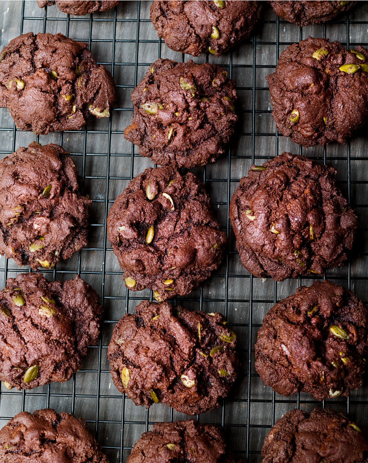

Brownies

I don't know why people don't make Birthday Brownies all the time — they're so easy and so wonderful. Brownies are much quicker to make than a cake, and they look so beautiful piled up in a rough-and-tumble pyramid spiked with birthday candles.
Ingredients
Makes: maximum of 48
- 375 grams soft unsalted butter
- 375 grams best-quality dark chocolate
- 6 large eggs
- 1 tablespoon vanilla extract
- 500 grams caster sugar
- 225 grams plain flour
- 1 teaspoon salt
- 300 grams chopped walnuts
Method
- Preheat the oven to 180°C/160°C Fan/350°F/gas mark 4. Line your brownie pan — I think it's worth lining the sides as well as the base — with foil, parchment or Bake-O-Glide.
- Melt the butter and chocolate together in a large heavy-based pan. In a bowl or large wide-mouthed measuring jug, beat the eggs with the sugar and vanilla. Measure the flour into another bowl and add the salt.
- When the chocolate mixture has melted, let it cool a bit before beating in the eggs and sugar, and then the nuts and flour. Beat to combine smoothly and then scrape out of the saucepan into the lined pan.
- With a spoon or spatula, fold in the chocolate chips and pumpkin seeds; you will have a thick, firm mixture.
- Bake for about 25 minutes. When it's ready, the top should be dried to a paler brown speckle, but the middle still dark and dense and gooey. And even with such a big batch you do need to keep alert, keep checking: the difference between gungy brownies and dry brownies is only a few minutes; remember that they will continue to cook as they cool.